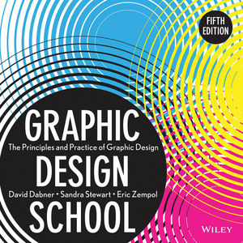

"Graphic Design School" เป็นหนังสือสอนทฤษฎีกราฟิกระดับโลก จากผู้เชียวชาญซึ่งเป็นกูรูด้านกราฟิกดีไซน์จากมหาวิทยาลัยชื่อดังด้านการออกแบบ จัดทำขึ้นบนพื้นฐานที่ต้องการสร้างความเข้าใจในหลักการออกแบบการฟิกหลากหลายรูปแบบ ไม่ว่าจะเป็นสิ่งพิมพ์ เว็บไซต์ หรือชิ้นงานที่จับต้องได้ เนื้อหาภายในถูกเรียบเรียงไว้เสมือนเป็นหลักสูตรการเรียนด้านออกแบบในระดับมหาวิทยาลัย พร้อมภาพตัวอย่างประกอบ อีกทั้งยังได้รวบรวมตัวอย่างผลงานหลากหลายระดับ เริ่มตั้งแต่ระดับนักศึกษาไปจนถึงนักออกแบบอาชีพ ซึ่งผ่านการคัดเลือกอย่างพิถีพิถัน เพื่อให้เข้าใจถึงแก่นขององค์ความรู้อย่างแท้จริง และหลายๆ ส่วนในหนังสือ ได้สอดแทรกแบบฝึกหัดอย่างเป็นขั้นตอน หรือมอบหมายงาน รวมถึงคำแนะนำที่มีประโยชน์ ตลอดจนชี้แหล่งไอเดียวที่จะช่วยจุดประกายงานออกแบบให้กับผู้อ่าน
